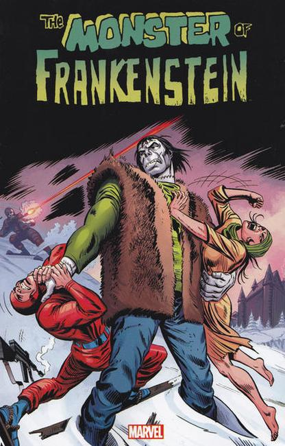

Adapted from the Mary Shelley novel Frankenstein
1973 Issue #1 Illustrations by Mike Ploog, written by Gary Freidrich. Robert Walton IV leads an expedition into the Arctic to retrieve Frankenstein's Monster which has been frozen into the ice. He relates to the cabin boy how the monster was created.

540 Page rerprint of the Frankenstein 1973 series (#1-18), plus Marvel Team-Up featuring Frankenstein (#36-37).